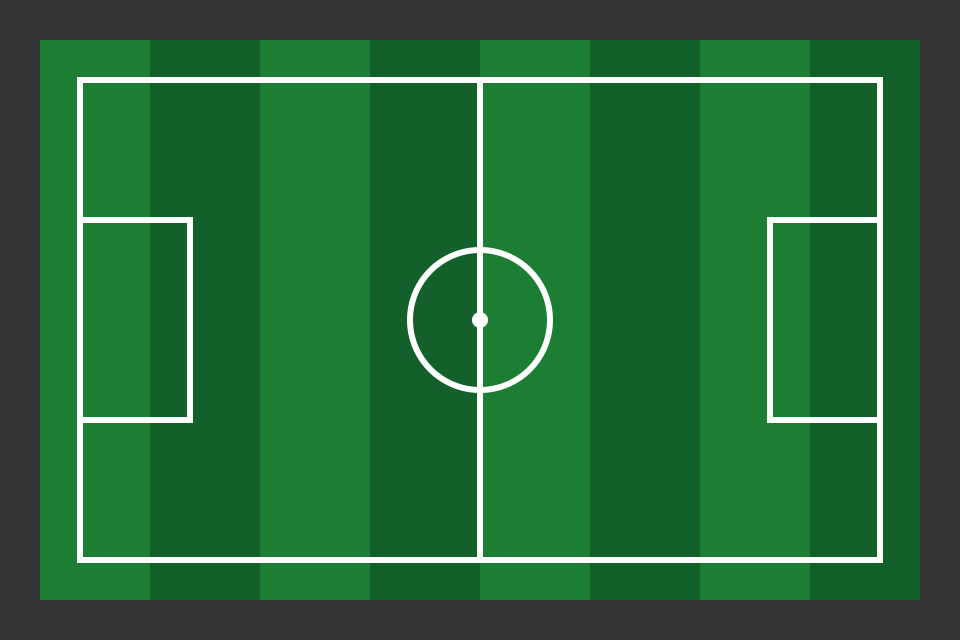

Último resultado
Time da Casa 2 x 0 Vale FC
Acompanhe aqui as novidades do seu time.

Time da Casa 2 x 0 Vale FC
Cidade Alta 1 x 1 Time da Casa
Nenhuma notícia encontrada. Tente outro termo.
Posso salvar seus favoritos neste aparelho?
Favoritos: 0
Vitória
O time da casa venceu por 2x0 no clássico regional.
A equipe anunciou a contratação do novo atacante para a temporada.
A torcida pode acompanhar o treino aberto na quinta-feira, antes do próximo jogo.
Você ainda não favoritou nenhuma notícia. Use o botão "Favoritar" nas notícias.
| Data | Jogo | Local | Resultado |
|---|---|---|---|
| Cidade Alta x Time da Casa | Arena Cidade Alta | Empate, 1 x 1 | |
| Time da Casa x Vale FC | Estádio Municipal | Vitória, 2 x 0 | |
| Serrana EC x Time da Casa | Arena Serra | Agendado | |
| Time da Casa x Litoral AC | Estádio Municipal | Agendado | |
| Planalto FC x Time da Casa | Campo do Planalto | Agendado |
| Pos. | Time | P | J | V | E | D |
|---|---|---|---|---|---|---|
| 1 | Time da Casa | 17 | 8 | 5 | 2 | 1 |
| 2 | Vale FC | 14 | 8 | 4 | 2 | 2 |
| 3 | Serrana EC | 12 | 8 | 3 | 3 | 2 |
| 4 | Litoral AC | 11 | 8 | 3 | 2 | 3 |
| 5 | Planalto FC | 8 | 8 | 2 | 2 | 4 |
| 6 | Cidade Alta | 4 | 8 | 1 | 1 | 6 |
P: pontos. J: jogos. V: vitórias. E: empates. D: derrotas.
Todos os campos são obrigatórios. Este formulário é uma demonstração e não envia dados.